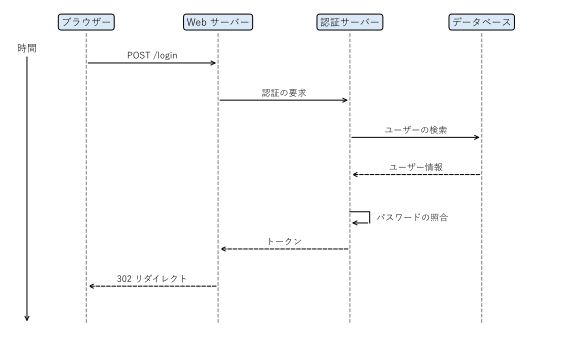
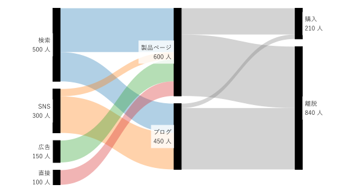

第 12 章 流れと手順を見る
処理の手順、状態の移り変わり、システム間のやり取り、量の流れ、作業の依存関係といった「流れ」を持つ構造は、有向グラフとして表せる。この章では、フローチャート、状態遷移図、シーケンス図、サンキー図、DAG を扱う。
フローチャート
フローチャートは、処理の手順と分岐を、記号と矢印で表す図である。図 50 は、ログイン処理の流れである。
図 50 ログイン処理のフローチャート
フローチャートでは、記号の形に意味を持たせる。JIS X 0121（情報処理用流れ図・プログラム網図・システム資源図記号）に記号が定められているが、日常的には次の 3 つで十分なことが多い。
記号 |
意味 |
|---|---|
角の丸い長方形（端子） |
処理の開始と終了 |
長方形（処理） |
1 つの処理 |
ひし形（判断） |
条件による分岐。出ていく矢印に、条件の結果（「はい」「いいえ」など）を書く |
1// フローチャート: ログイン処理の流れ
2// 処理は長方形、判断はひし形、開始と終了は角の丸い長方形で描く
3digraph login {
4 node [fontname="Yu Gothic", shape=box, style=filled, fillcolor=white];
5 edge [fontname="Yu Gothic", fontsize=10];
6
7 start [label="開始", shape=box, style="rounded,filled",
8 fillcolor="#dbe9f6"];
9 input [label="ID とパスワードを受け取る"];
10 exists [label="ユーザーが\n存在するか", shape=diamond,
11 fillcolor="#f6e3b4"];
12 verify [label="パスワードが\n正しいか", shape=diamond,
13 fillcolor="#f6e3b4"];
14 count [label="失敗回数を数える"];
15 locked [label="失敗が\n5 回以上か", shape=diamond, fillcolor="#f6e3b4"];
16 lock [label="アカウントをロックする"];
17 error [label="エラーを表示する"];
18 session [label="セッションを作る"];
19 finish [label="終了", shape=box, style="rounded,filled",
20 fillcolor="#dbe9f6"];
21
22 start -> input -> exists;
23 exists -> verify [label="はい"];
24 exists -> error [label="いいえ"];
25 verify -> session [label="はい"];
26 verify -> count [label="いいえ"];
27 count -> locked;
28 locked -> lock [label="はい"];
29 locked -> error [label="いいえ"];
30 lock -> error;
31 session -> finish;
32 error -> finish;
33}
フローチャートは、流れを上から下へ一方向にそろえると読みやすい。Graphviz の dot エンジンはエッジの向きをそろえて配置するので、フローチャートに向いている。分岐が多く、図が大きくなりすぎる場合は、処理のまとまりを別の図に分ける。
状態遷移図
状態遷移図は、対象が取りうる状態と、状態から状態への移り変わり（遷移）を表す図である。ノードが状態、エッジが遷移、エッジのラベルが遷移のきっかけ（イベント）を表す。注文の状態、TCP の接続状態、UI の画面遷移など、状態を持つものの設計や説明に使う（図 51）。
図 51 通販サイトの注文の状態遷移図
1// 状態遷移図: 通販サイトの注文の状態
2// ノードが状態、エッジが遷移、エッジのラベルが遷移のきっかけ（イベント）
3digraph order_state {
4 rankdir=LR;
5 node [fontname="Yu Gothic", shape=box, style="rounded,filled",
6 fillcolor="#dbe9f6"];
7 edge [fontname="Yu Gothic", fontsize=10];
8
9 // 開始状態は黒丸、終了状態は二重丸で描く（UML の状態機械図の流儀）
10 initial [label="", shape=circle, style=filled, fillcolor=black,
11 width=0.2];
12 final [label="", shape=doublecircle, style=filled, fillcolor=black,
13 width=0.15];
14
15 initial -> 受付済み;
16 受付済み -> 支払い済み [label="支払い"];
17 受付済み -> キャンセル [label="取り消し"];
18 支払い済み -> 発送済み [label="発送"];
19 支払い済み -> キャンセル [label="取り消し\n（返金）"];
20 発送済み -> 配達完了 [label="受け取り"];
21 発送済み -> 支払い済み [label="配達失敗"];
22 配達完了 -> final;
23 キャンセル -> final;
24}
UML の状態機械図にならい、開始状態を黒丸、終了状態を二重丸で描いている。この図から、「発送済み」の注文は直接キャンセルできないこと、配達に失敗すると「支払い済み」に戻ることが分かる。
フローチャートと状態遷移図は似ているが、表すものが異なる。フローチャートのノードは「処理」で、矢印は処理の順序を表す。状態遷移図のノードは「状態」で、矢印はイベントによる変化を表す。状態遷移図を描くと、遷移の漏れ（どの状態からも到達できない状態、抜け出せない状態など）を見つけやすくなる。
シーケンス図
シーケンス図は、複数の参加者（システム、サーバー、利用者など）の間でやり取りされるメッセージを、時間の順に並べた図である。縦方向が時間の流れ（上から下）を表す。API の呼び出しの流れや、通信プロトコルの説明に使う（図 52）。

図 52 ログイン処理のシーケンス図
上の箱が参加者で、そこから下に伸びる破線を生存線（ライフライン）という。
実線の矢印は要求のメッセージ、破線の矢印は応答のメッセージである。
自分自身に戻る矢印は、参加者の内部の処理（パスワードの照合）を表す。
フローチャートは 1 つの処理の中の手順を表すのに対し、シーケンス図は複数の参加者の間のやり取りを表す。この図から、Web サーバーはデータベースに直接アクセスせず、認証サーバーを経由していることが分かる。
シーケンス図は、Graphviz のレイアウトエンジンでは描きにくい。サンプルでは、matplotlib で生存線と矢印を座標を指定して描いている。実務では、テキストからシーケンス図を描ける PlantUML や Mermaid を使うことが多い。
28def create_figure() -> Figure:
29 """ログイン処理のシーケンス図を描く."""
30 fig, ax = plt.subplots(figsize=(8, 4.8))
31 bottom = -(len(MESSAGES) + 0.5) * STEP
32 # 参加者の箱と、そこから下に伸びる生存線（ライフライン）
33 for x, name in enumerate(PARTICIPANTS):
34 ax.text(x, 0.6, name, ha="center", va="center",
35 bbox={"boxstyle": "round", "facecolor": "#dbe9f6"})
36 ax.plot([x, x], [0.3, bottom], color="gray", linestyle="--",
37 linewidth=1)
38 for row, (source, target, text, is_reply) in enumerate(MESSAGES):
39 y = -(row + 0.5) * STEP
40 style = "--" if is_reply else "-"
41 if source == target:
42 # 自分自身へのメッセージは、右に出て戻る矢印で描く
43 right = source + 0.15
44 ax.plot([source, right, right], [y, y, y - 0.3], color="black",
45 linewidth=1)
46 ax.annotate("", xy=(source, y - 0.3), xytext=(right, y - 0.3),
47 arrowprops={"arrowstyle": "->"})
48 ax.text(right + 0.05, y - 0.15, text, va="center", fontsize=9)
49 continue
50 ax.annotate("", xy=(target, y), xytext=(source, y),
51 arrowprops={"arrowstyle": "->", "linestyle": style})
52 ax.text((source + target) / 2, y + 0.08, text, ha="center",
53 va="bottom", fontsize=9)
54 ax.annotate("時間", xy=(-0.45, bottom), xytext=(-0.45, -0.2),
55 arrowprops={"arrowstyle": "->"}, ha="center")
56 ax.set_xlim(-0.6, len(PARTICIPANTS) - 0.4)
57 ax.set_ylim(bottom - 0.2, 1.0)
58 ax.set_axis_off()
59 fig.tight_layout()
60 return fig
サンプルの全体：ch12_sequence.py
サンキー図
サンキー図は、量の流れを、量に比例した太さの帯で表す図である。エネルギーの流れ、予算の配分、Web サイトの訪問者の行動など、ある段階から次の段階へ量がどのように分かれ、合流するかを示す。図 53 は、架空の Web サイトの訪問者の流れである。

図 53 Web サイトの訪問者の流れのサンキー図
左から、流入元、閲覧したページ、結果の 3 段で、帯の太さが人数を表す。検索から来た訪問者は製品ページへ、SNS から来た訪問者はブログへ流れる割合が高いことが分かる。また、購入に至るのは主に製品ページを経由した訪問者であることも読み取れる。
サンキー図を描くときは、次の点に注意する。
各ノードでは、流入の合計と流出の合計が一致するようにする（この例では、製品ページへの流入 600 人と流出 600 人）。一致しない場合は、差を「離脱」などのノードで明示する。
帯の交差が少なくなるよう、ノードと帯の並べ方を工夫する。
帯の色は、流れの元か先のどちらかに合わせると、流れを追いやすい。
45def band(x0: float, y0: tuple[float, float], x1: float,
46 y1: tuple[float, float]) -> Path:
47 """左端の上下 y0 と右端の上下 y1 を結ぶ帯の輪郭を返す."""
48 middle = (x0 + x1) / 2
49 vertices = [
50 (x0, y0[0]), # 左上
51 (middle, y0[0]), (middle, y1[0]), (x1, y1[0]), # 右上へ
52 (x1, y1[1]), # 右下
53 (middle, y1[1]), (middle, y0[1]), (x0, y0[1]), # 左下へ
54 (x0, y0[0]),
55 ]
56 codes = [Path.MOVETO, Path.CURVE4, Path.CURVE4, Path.CURVE4,
57 Path.LINETO, Path.CURVE4, Path.CURVE4, Path.CURVE4,
58 Path.CLOSEPOLY]
59 return Path(vertices, codes)
帯の輪郭は、左端と右端を 3 次ベジェ曲線で結んで作る。制御点を左右の中間の x 座標に置くと、両端で水平に出入りする滑らかな曲線になる。matplotlib には 1 段の流れを描く matplotlib.sankey モジュールがあるが、複数の段の流れは描きにくいため、サンプルでは帯を直接描いている。
サンプルの全体：ch12_sankey.py
DAG
閉路を持たない有向グラフ（DAG）は、作業の依存関係を表すのに使う。CI/CD のパイプライン、ビルドの依存関係、データ処理のワークフローなどが該当する（図 54）。
図 54 CI/CD パイプラインのジョブの依存関係
1// DAG（有向非巡回グラフ）: CI/CD パイプラインのジョブの依存関係
2// 矢印の元のジョブが終わると、矢印の先のジョブを実行できる
3digraph pipeline {
4 rankdir=LR;
5 node [fontname="Yu Gothic", shape=box, style="rounded,filled",
6 fillcolor="#dbe9f6"];
7
8 checkout [label="チェックアウト"];
9 lint [label="静的解析"];
10 build [label="ビルド"];
11 unit [label="単体テスト"];
12 integration [label="結合テスト"];
13 docs [label="文書の生成"];
14 package [label="パッケージ作成"];
15 deploy [label="デプロイ", fillcolor="#f6e3b4"];
16
17 checkout -> {lint build docs};
18 build -> {unit integration};
19 {lint unit integration} -> package;
20 {package docs} -> deploy;
21}
矢印の元のジョブが終わると、矢印の先のジョブを実行できる。DAG として描くと、次のことが分かる。
並列に実行できるジョブ：矢印でつながっていないジョブ（静的解析、ビルド、文書の生成）は、同時に実行できる。
実行の順序：矢印の向きに沿って並べた順序（トポロジカル順序）で実行すれば、依存関係を満たせる。
クリティカルパス：各ジョブの所要時間が分かれば、全体の所要時間を決める最も長い経路（クリティカルパス）を求められる。この経路上のジョブを速くしない限り、全体は速くならない。この例でジョブの数が最も多い経路は、チェックアウト → ビルド → 単体テストまたは結合テスト → パッケージ作成 → デプロイである。
閉路があると、どのジョブも先に実行できなくなる。依存関係を DAG として描くと、意図しない閉路を見つけやすい。閉路の検出は、第 13 章の依存関係グラフで扱う。
まとめ
処理の手順はフローチャート、状態の移り変わりは状態遷移図で描く。
参加者の間のやり取りの順序は、シーケンス図で描く。
量の流れはサンキー図で、帯の太さとして描く。
作業の依存関係は DAG で描く。並列に実行できる作業や、全体の所要時間を決める経路が分かる。